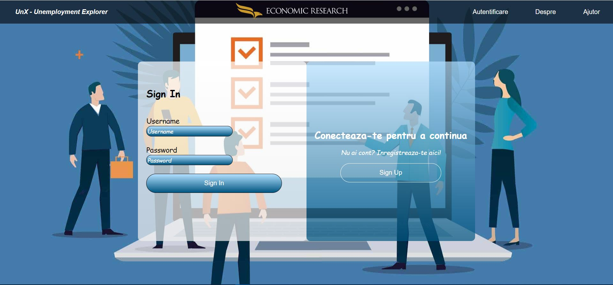
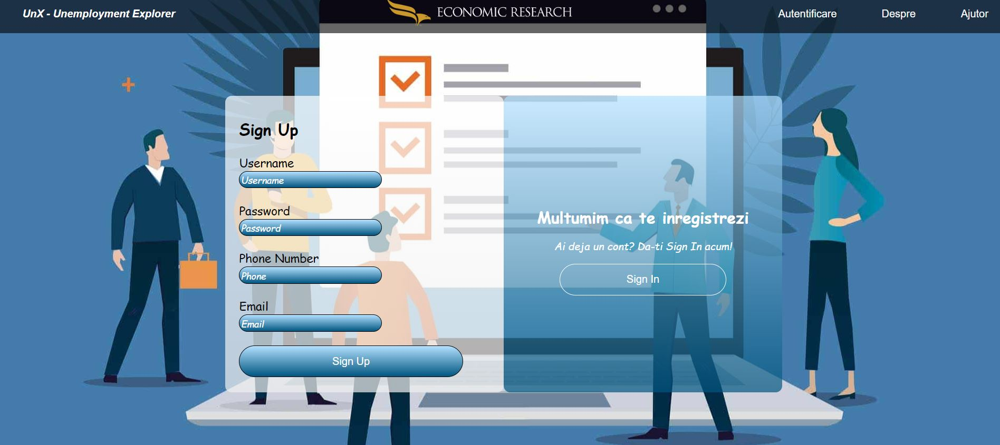
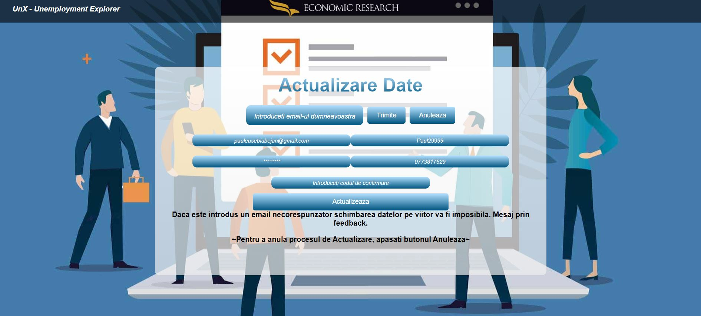
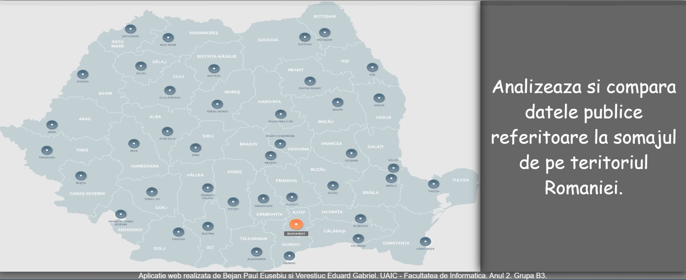
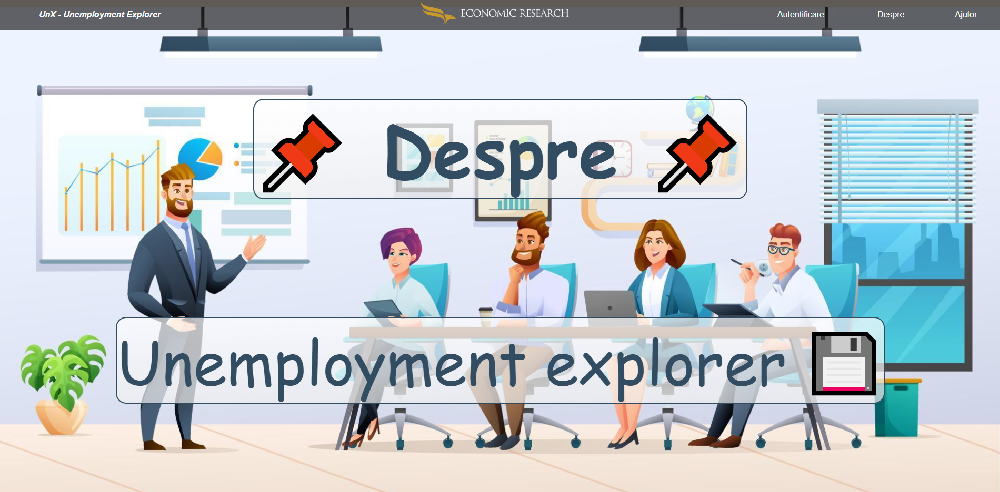
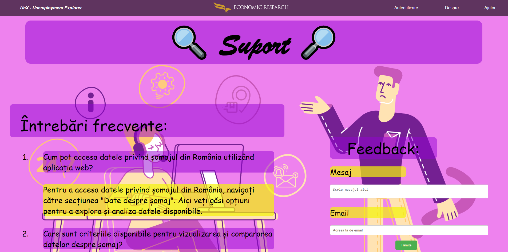
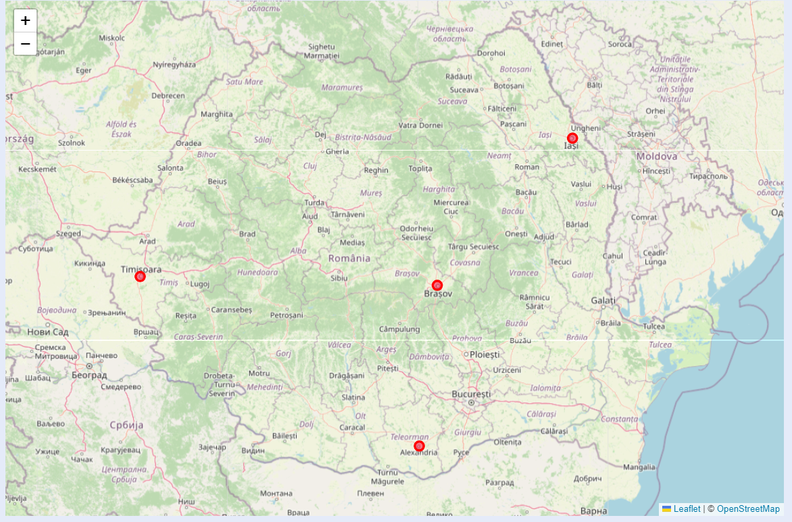

UnX - Unemployment Explorer
Cuprins
- Autori
- 1. Introducere
- 2. Descriere Generală
-
3. Interfețele aplicației
-
3.1 Interfața utilizatorului
- 3.1.1 Bara de navigație
- 3.1.2 Pagina de autentificare
- 3.1.3 Pagina de înregistrare
- 3.1.4 Pagina de actualizare a datelor
- 3.1.5 Pagina de acasă
- 3.1.6 Pagina informativa
- 3.1.7 Pagina de ajutor
- 3.1.8 Pagina verificare codului pentru inregistrare
- 3.1.9 Pagina administratorului
- 3.1.10 Pagina de generat statistici
- 3.2 Interfața Hardware
- 3.3 Interfața Software
- 3.4 Interfața de comunicare
-
3.1 Interfața utilizatorului
- 4. Caracteristici ale sistemului
- 5.Funcționalități pentru protecție și securitate
- 6.Diagramele C4
- 7. Videoclip demonstartiv
1. Introducere
1.1 Scop
UnX - Unemployment Explorer este o aplicație web dezvoltată de studenții menționați în secțiunea de Autori de la Facultatea de Informatică a Universității Alexandru Ioan Cuza din Iași. Scopul acestui document este acela de a prezenta o descriere detaliată a funcționalităților, precum și de a specifica cerințele aplicației web. Această aplicație va oferi utilizatorilor posibilitatea de a vizualiza date statistice privind șomajul din România, dar și de a compara aceste date pe diferite criterii, cum ar fi rata șomajului pe județe, pe sexe, pe grupe de vârstă sau pe nivel de educație.
1.2 Convenția documentului
- Acest document urmează șablonul de documentație a cerințelor software conform IEEE Software Requirements Specification.
- Textul îngroșat este folosit pentru a defini noțiuni personalizate sau pentru a accentua concepte importante.
1.3 Publicul țintă
Acest document este destinat profesorilor, studenților, dezvoltatorilor publicului interesat, însă orice utilizator, indiferent de cunoștințele lor tehnologice, poate consulta secțiunile de Interfeța utilizatorului și Caracteristici ale sistemului pentru a obține o mai bună înțelegere a ceea ce oferă aplicația.
1.4 Scopul Produsului
Scopul produsului "Unemployment Explorer"
este de a oferi utilizatorilor un instrument puternic și ușor de
folosit pentru explorarea, vizualizarea și compararea datelor
referitoare la șomajul din România pe ultimele 12 luni. Acesta are
câteva obiective principale: analiza și înțelegerea datelor de șomaj
din România, compararea multi-criterială, generarea de vizualizări
informative, exportul de date (utilizatorii pot exporta datele și
vizualizările în formatele CSV, SVG și PDF, pentru a le utiliza în
analize ulterioare, raportări sau prezentări), suport pentru luarea
deciziilor (produsul poate servi ca instrument de sprijin pentru
manageri și alte părți interesate în luarea deciziilor legate de
politici de angajare, planificare economică și alte aspecte legate
de ocuparea forței de muncă).
Prin îmbunătățirea accesibilității și
înțelegerii datelor de șomaj și prin furnizarea de instrumente
puternice de analiză și vizualizare, "Unemployment Explorer"
contribuie la creșterea transparenței și a cunoștințelor în domeniul
pieței muncii din România și poate facilita dezvoltarea de politici
și strategii mai eficiente în acest domeniu.
1.5 Bibliografie
- Site-ul cursului de la Tehnologii Web, FII UAIC Iași
- IEEE Template: https://github.com/rick4470/IEEE-SRS-Tempate#readme
- Format scholarly-html: https://w3c.github.io/scholarly-html/
2. Descriere Generală
2.1 Perspectiva produsului
"Unemployment Explorer" este un instrument esențial pentru explorarea și analiza datelor de șomaj din România. Oferind vizualizări interactive, comparare multi-criterială și export de date, acesta susține luarea deciziilor informate în politicile de ocupare a forței de muncă și promovează dezvoltarea economică și socială. Cu un potențial adaptabil și extensibil, produsul are capacitatea de a răspunde nevoilor diverse ale utilizatorilor și de a contribui la o înțelegere mai profundă a dinamicii pieței muncii.
2.2 Funcționalitățile produsului
Fiecare utilizator va avea acces la urmatoarele funcționălități:- să se înregistreze pe site
- să se autentifice pe site
- să își reseteze parola in cazul in care a uitat-o si sa isi actualizeze datele personale
- să acceseze paginile "Autentificare", "Despre", "Ajutor"
- să acceseze pagina "Autentificare" pentru a se loga sau a se înregistra pe pagina web
- să acceseze pagina "Despre" pentru a accesa scurtă descriere a paginii web
- să acceseze pagina "Ajutor" pentru a beneficia de sfaturi în vederea utilizării aplicației
- dacă este autentificat, să acceseze date referitoare la șomajul din România
- dacă este autentificat, să exporte date referitoare la șomajul din România
- dacă utilizatorul are rol de admin, acesta poate șterge utilizatori,tabele si feedback-uri din baza de date si se poate importa fisiere CSV in baza de date
2.3 Clase și caracteristici ale utilizatorilor
2.3.1 Utilizator principal
- utilizatorii autentificați pot fi:
-
- orice categorie de oameni care doresc să vizualizeze datele de șomaj din România și să exporte datele în formatele CSV, SVG și PDF
-
utilizatorii neautentificați pot fi:
- orice categorie de oameni care doresc isi faca cont
2.3.2 Caracteristici
- Utilizatorii care sunt autentificați pot să vizualizeze datele de șomaj din România, să exporte datele în formatele CSV, SVG și PDF, să își acceseze profilul și să își modifice datele personale.
- Utilizatorii care sunt neautentificați pot doar să sa își creeze un cont pe site.
2.4 Mediul de operare
Produsul dezvoltat poate fi utilizat pe orice dispozitiv cu un browser web care suportă HTML5, CSS și PHP.
2.5 Documentația pentru utilizator
Utilizatorii pot consulta acest document pentru explicații detaliate despre funcționalitățile aplicației web.
3. Interfețele aplicației
3.1 Interfața utilizatorului
Mai jos, puteți vedea o prezentare generală a fiecărei pagini a aplicației și funcționalităților pe care le oferă:-
- Aceasta reprezintă meniul de navigare către fiecare pagina a aplicației, prezent pe fiecare pagină totodată.
- Pagina de autentificare
-
- Pagina are rolul de a realiza autentificarea utilizatorilor la UnX - Unemployment Explorer.
- Pentru a se autentifica, utilizatorul trebuie să completeze câmpurile de "username" și "password" cu credențiale valide, urmând să acționeze butonul Autentificare.
- În cazul în care utilizatorul nu are cont pe site, acesta își poate crea unul prin accesarea pagini de sign-up, ce se face prin apăsarea butonului Sign-up.
- În cazul în care utilizatorul și-a uitat parola, acesta poate să o reseteze selectând opțiunea de Ai uitat parola?
- 
- Pagina de Sign-up
-
- Pagina are rolul de a realiza inregistrarea utilizatorilor la UnX - Unemployment Explorer.
- 
- Pagina de actualizare a datelor
-
- Pagina are rolul de a permite utilizatorilor inregistrati la UnX - Unemployment Explorer sa isi modifice datele de autentificare.
- 
- Pagina de acasă
-
- Din această pagină poți accesa toate funcționalitățile aplicației web.
- 
- Pagina informativa - Despre
-
- Pagina are rolul de a introduce site-ul UnX - Unemployment Explorer pe scurt, prin menționarea unor mici detalii: tehnologii utilizate, numele autorilor, scopul aplicației și bibliografia.
- 
- Pagina de ajutor - Help
-
- Pagina are rolul de a prezenta câteva sfaturi pentru a putea beneficia de o experienta completa pe site.
- 
- Pagina verificare codului pentru inregistrare
-
- Pagina are rolul de a verificare autenticitatea emailului introdus la inregistrare.
-

-

- Pagina Administratorului
-
- Pagina are rolul de a permite utilizatorilor cu rol de admin sa gestioneze utilizatorii, sa stearga utilizatori, tabele si feedback-uri (plus sa le vizualizeze) din baza de date si sa se importe fisiere CSV in baza de date.
-

- Pagina de generat statistici
-
- Pagina are rolul de a permite utilizatorilor cu rol de user sa genereze statistici pe baza datelor din baza de date in trei tipuri de vizualizare diferite si sa le exporte in trei formate diferite.
-

-

-

-

- 
- Pagina Swagger
-
- Aplicația este documentata cu Swagger si ofera posibilitatea de a testa API-urile si de vedea structura lor.
-

3.2 Interfața Hardware
Acest produs nu necesită interfețe hardware, funcționând pe orice platformă (calculatoare, laptopuri, telefoane etc.), care are instalată un browser.
3.3 Interfața Software
Cerințele minime de software includ un browser funcțional, compatibil cu HTML5,PHP si JS.
MySql
Aceasta reprezintă baza de date în care stocăm informații despre utilizatori.3.4 Interfața de comunicare
Aplicația necesită o conexiune la internet. Standardul de comunicare care va fi utilizat este HTTP.
4. Caracteristici ale sistemului
4.1 Gestionarea contului
4.1.1 Descriere și generalități
Un utilizator se poate înregistra alegându-și un nume de utilizator, un email, o parola si numar de telefon. Acesta se poate autentifica având nevoie doar de numele de utilizator și de parolă.4.1.2 Actualizarea informațiilor
- În momentul în care un utilizator nou este creat, credențialele acestuia sunt introduse în baza de date. De asemenea, când utilizatorul decide să-și modifice credențialele, noile valori sunt și ele actualizate în baza de date.
4.1.3 Condiții de funcționare
- Pentru a-și modifica credențialele utilizatorul, nu trebuie să fie autentificat.
- Pentru a se autentifica, utilizatorul are nevoie de un cont care este înregistrat în baza de date.
4.2 Secțiunea de utilizatori
4.2.1 Descriere și generalități
Secțiunea Utilizatori este destinată adminului, și aceasta îi oferă posibilitatea de a vizualiza o listă cu toți utilizatorii, feedback-urile si tabelele din baza de date. De asemenea, acesta are posibilitatea de a elimina utilizatori din baza de date, dacă dorește acest lucru, și de a importa fisiere CSV in baza de date, de a sterge tabele si feedback-uri vizualizate deja.4.2.2 Actualizarea informațiilor
- La apăsarea butonului de ștergere din dreptul fiecărui utilizator/tabele/feedback a carui nume/nume/id este selectat, informatiile utilizatorului/tabelei/feedback-ului care a fost selectat, sunt șterse din baza de date.
4.2.3 Condiții de funcționare
- Utilizatorul trebuie să fie autentificat.
- Utilizatorul trebuie să dețină drepturi de admin.
4.3 Secțiunea de Logout
4.3.1 Descriere și generalități
Secțiunea de Logout are rolul de a deconecta utilizatorul de pe cont și îl redirecționează către pagina de sign in.4.3.2 Actualizare informațiilor
- Tokenul jwt de autentificare este eliminat.
4.3.3 Condiții de funcționare
- Utilizatorul trebuie să fie autentificat.
5. Funcționalități pentru protecție și securitate
5.1 Protecția datelor
Aplicația va asigura confidențialitatea datelor prin intermediul unei criptări a parolelor utilizatorilor înainte de a fi stocate în baza de date. De asemenea, accesul la datele utilizatorilor va fi restricționat, astfel încât acestea să nu poată fi vizualizate sau modificate de către persoane neautorizate. Toate cererile importante vor trebuie autorizate prin token-uri JWT.
5.2 Securizarea datelor
Parola utilizatorilor va fi criptată înainte de a fi stocată prin intermediul unui algoritm de hashing. De asemenea, accesul la datele utilizatorilor va fi restricționat, astfel încât acestea să nu poată fi vizualizate sau modificate de către persoane neautorizate. Toate cererile importante vor trebui autorizate prin token-uri JWT.
5.3 Calitățile Software
- Adaptabilitate
- Ușurință în utilizare
- Flexibilitate
6.Diagramele C4
6.1 Nivelul 1 - Context

6.2 Nivelul 2 - Containere

6.3 Nivelul 3 - Componente

6.4 Nivelul 4 - Cod